5분 둘러보기
배열의 합과 평균을 구하는 NS 차트를 처음부터 그려 봅니다. 키보드만으로도, 마우스만으로도 됩니다. 키는 왼쪽이 Vim 키, 오른쪽이 표준 키와 마우스입니다. 둘 중 손에 익은 쪽을 쓰면 됩니다.
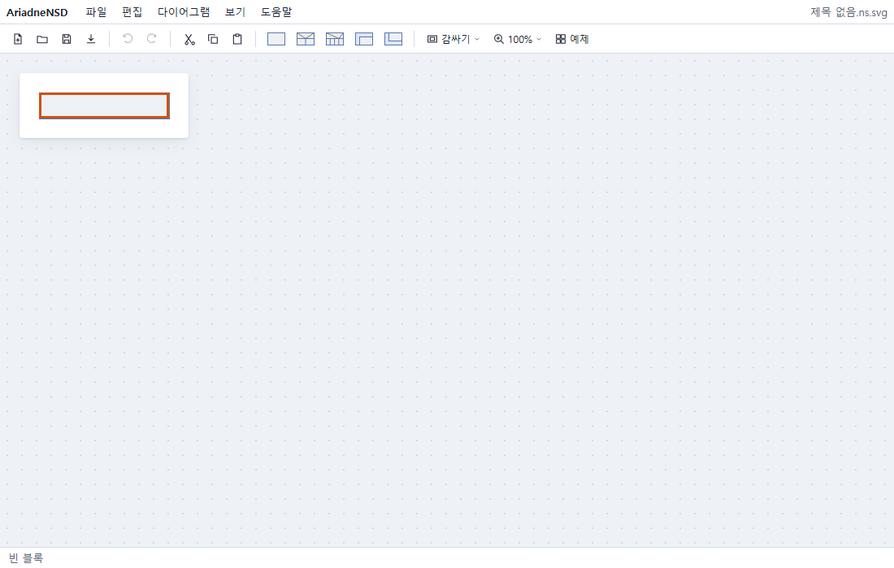
앱을 열면 빈 블록 하나가 선택된 새 문서가 보입니다. 위에는 메뉴와 툴바가, 아래에는 지금 선택한 것을 알려 주는 상태 표시줄이 있습니다.
1첫 블록 적기
선택한 블록에 텍스트를 적으려면 Enter를 눌러 편집을 시작합니다. 적고 나서 다시 Enter를 누르면 편집이 완료됩니다. Esc도 편집 완료입니다.
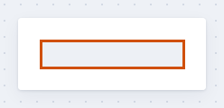
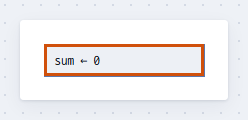
sum ← 0을 적음| 하는 일 | Vim 키 | 표준 키 · 마우스 |
|---|---|---|
| 편집 시작 | i (글자 앞에 커서), cc (비우고 새로) | Enter, F2, 더블클릭 |
| 편집 완료 | Esc | Enter |
| 블록 안에서 줄 바꾸기 | Shift+Enter |
블록이 선택된 채로 글자 키를 누르면 텍스트가 적히지 않고 명령이 됩니다(Vim과 같습니다). 적으려면 먼저 편집을 시작하세요.
2블록 더 삽입하기
새 블록은 선택한 블록의 다음에 들어갑니다. 처리 블록은 삽입하면 편집이 바로 시작되어,
Enter를 누르지 않고 곧장 적으면 됩니다. 적고 Enter를 누르면 그
블록이 선택된 채로 남으니, 다시 삽입해 다음 블록을 적습니다. 이렇게 i ← 0,
sum ← sum + a[i], i ← i + 1을 차례로 적습니다. 앞에 삽입하려면
Shift를 함께 누릅니다.
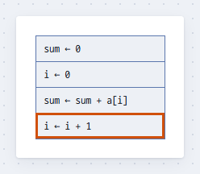
| 하는 일 | Vim 키 | 표준 키 · 마우스 |
|---|---|---|
| 처리 블록을 다음 / 앞에 삽입하고 바로 적기 | o (또는 a p) / O (또는 A p) | 툴바의 처리 블록 아이콘 / Shift+클릭 |
| 블록 사이를 오가기 | j k | ↓ ↑, 클릭 |
3While로 감싸기
아래 두 블록 sum ← sum + a[i]와 i ← i + 1을 반복문 안에
넣습니다.
-
두 블록을 함께 선택합니다. 방금 적은
i ← i + 1이 선택된 채로 Shift+↑를 한 번 누르면 바로 위 블록까지 선택되어, 주황 테두리가 두 블록을 함께 감쌉니다. 마우스로는sum ← sum + a[i]를 클릭한 뒤i ← i + 1을 Shift+클릭합니다. - While로 감쌉니다. s를 누르고 w를 누릅니다. 마우스로는 툴바의 While 아이콘을 Ctrl+클릭합니다.
-
반복 조건을 적습니다. While의 조건 칸에서 편집이 바로 시작되니
i < n을 적고 Enter를 누릅니다.
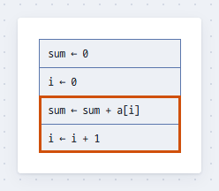
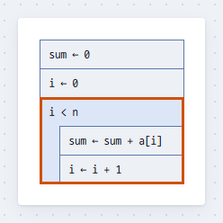
아래는 같은 과정을 화면 전체로 보인 것입니다. s를 누르고 잠깐 기다리면 선택한 블록 바로 아래에 다음에 누를 키의 힌트가 뜹니다.
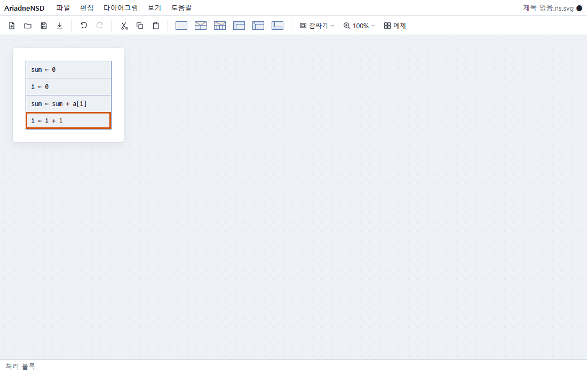
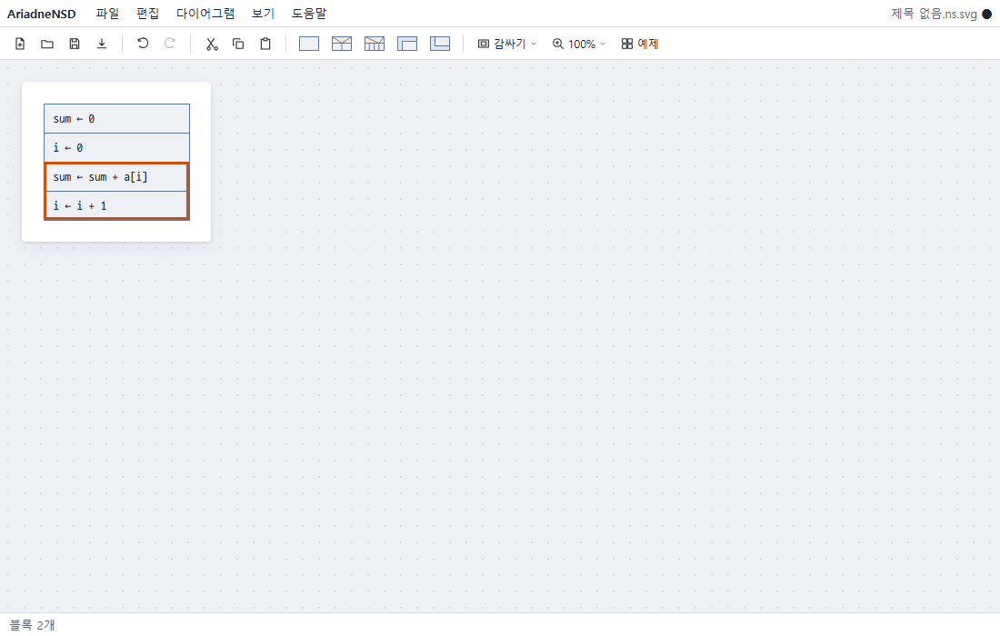
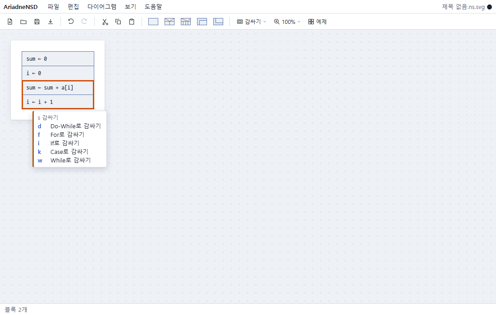
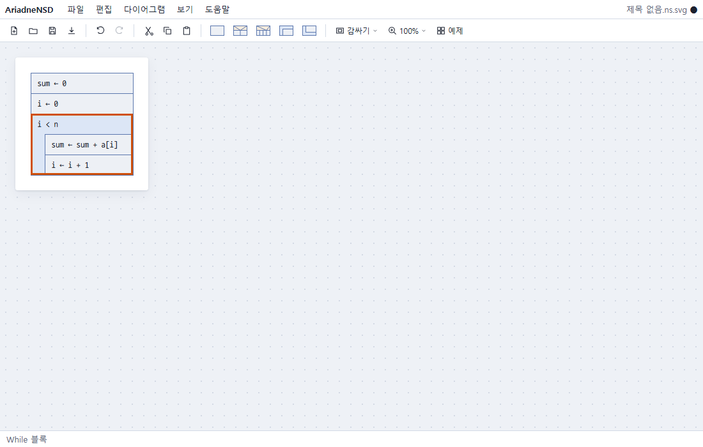
| 하는 일 | Vim 키 | 표준 키 · 마우스 |
|---|---|---|
| 여러 블록 선택 | V 다음 j k | Shift+↑ ↓, Shift+클릭 |
| While로 감싸기 | s w | 툴바의 While 아이콘을 Ctrl+클릭, 툴바의 "감싸기", 아이콘을 블록 위에 드래그 앤 드롭 |
| 다른 종류로 감싸기 | s + i If · k Case · d Do-While · f For | 같은 방법으로 그 아이콘 |
| 감싼 것 풀기 | ds | 컨텍스트 메뉴(오른쪽 클릭) |
두 글자 명령은 첫 키를 누르고 잠깐 기다리면 선택한 블록 바로 아래에 다음에 누를 수 있는 키가 보입니다. 외우지 않아도 됩니다.
4If 삽입하기
반복문 다음에 If를 삽입하고 조건 칸에 조건을 적습니다. 그다음 참 분기의 빈 블록으로
내려가 평균을 적습니다. 거짓 분기의
∅는 "여기는 비어 있음"이라는 표시입니다.
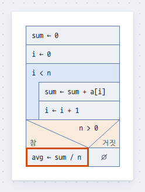
n > 0, 참 분기에 평균| 하는 일 | Vim 키 | 표준 키 · 마우스 |
|---|---|---|
| If를 다음 / 앞에 삽입 | a i / A i | 툴바의 If 아이콘 / Shift+클릭 |
| 다른 블록 삽입 | a + k Case · w While · d Do-While · f For · c 호출 | 툴바의 그 아이콘 |
| 분기 안으로 / 옆 분기로 | j / l h | ↓ / → ←, 클릭 |
5저장하기
저장하면 .ns.svg 파일이 생깁니다. 이 파일은 그 자체로 그림이라 브라우저,
GitHub, 문서에 그대로 보이고, AriadneNSD로 다시 열면 이어서 편집할 수 있습니다.
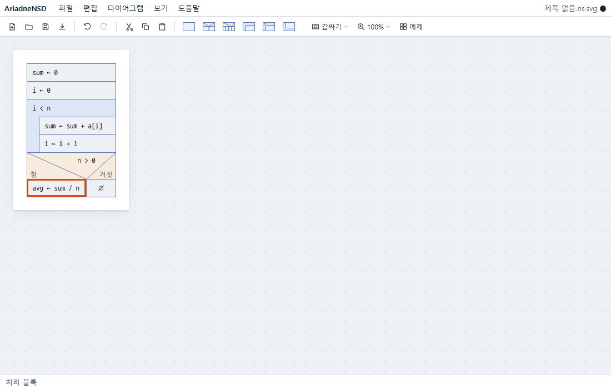
오른쪽 위의 파일 이름 옆 점(●)은 아직 저장하지 않았다는 뜻입니다.
| 하는 일 | Vim 키 | 표준 키 · 마우스 |
|---|---|---|
| 저장 / 다른 이름으로 저장 | Ctrl+S / Ctrl+Shift+S, 툴바의 저장 아이콘 | |
| 실행 취소 / 다시 하기 | u / U | Ctrl+Z / Ctrl+Y |
| 모든 키 보기 | ? | 도움말 › 단축키 목록 |
처음 저장할 때 이 컴퓨터의 파일과 이 브라우저 가운데 어디에 저장할지 묻습니다. Chrome과 Edge에서는 한 번 저장한 파일을 그 뒤로 자동으로 저장합니다. Firefox와 Safari에서는 파일을 저장할 때마다 내려받고, 이 브라우저에 저장한 문서는 어느 브라우저에서나 자동으로 저장합니다. 저장하지 않은 내용도 브라우저에 로컬 백업으로 남아, 페이지를 다시 열면 복원할지 묻습니다.
단축키 전체
앱에서 ?를 누르면 보이는 표와 같습니다.